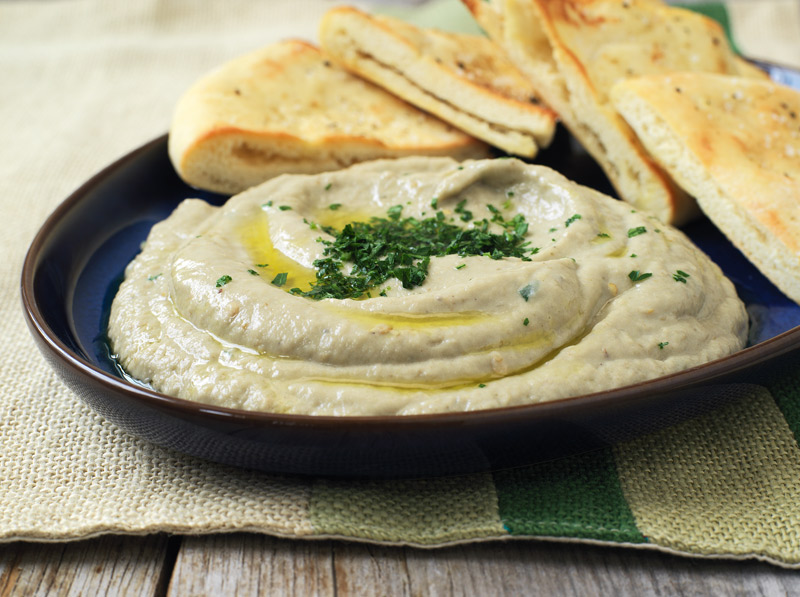

Baba Ganoush is a delicious eggplant dip of the middle eastern cuisnie.
It's creaminess and smoked flavour is guaranteed to get you hooked and craving for more.
Ingredients
- 1 to 2 globe eggplants (totaling 2 pounds or 900g)
- 3 tablespoons extra virgin olive oil
- 2 to 3 tablespoons roasted tahini (sesame paste)
- 1 to 2 garlic cloves (more or less depending on how garlicky you want your baba ghanoush to be), finely chopped
- 1/2 teaspoon ground cumin
- Juice of 1 lemon (about 2 1/2 tablespoons)
- Salt and cayenne pepper to taste
- 1 tablespoon chopped parsley
Steps
- Roast the eggplants, preheat oven to 400F and coock for 35-40 minutes.
- Scoop out and mash: Scoop the eggplant flesh into a large bowl and mash well with a fork.
- Add the garlic, olive oil, tahini, lemon, and seasoning. Mash well.You want the mixture to be somewhat smooth but still retaining some of the eggplant's texture.
- Cool and season to taste.
Recipes list